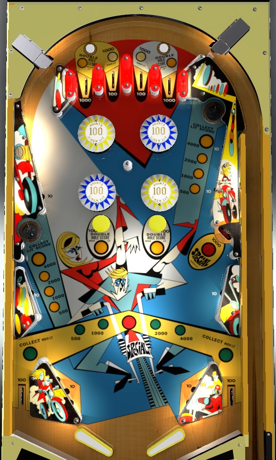

Advance the saucer values by shooting lit outer top lanes, lit mushroom bumpers, or the saucers themselves. Saucers are worth up to 4,000 points. Collecting 4,000-point saucers advances the green value, which increases the value of lit out lanes, lights bumpers, and is progress toward lighting the right standup target for Special.
The two outer top lanes score 1,000 points, and the two inner top lanes score 100 points. The left rollover button lights the two left top lanes, and the right rollover button lights the two right top lanes. When lit, the outer top lanes advance the saucer value, and the inner top lanes score 1,000 points instead of 100. All top lanes are unlit as soon as any 10-point switch is scored anywhere in the game. Outer top lanes will not light up when the rollover buttons are pressed if the saucer value is already maxed out at 4,000 points.
Yellow saucers start at a value of 500 points. Making a lit outer top lane, hitting a lit yellow mushroom bumper, or making a saucer advances the yellow saucer value; true to the game's name, each advance doubles the saucer value, to 1,000 then 2,000 then 4,000 points. On easy settings, both mushroom bumpers are lit; on hard settings, only one is lit, alternating each time a 10-point switch is scored. Making a saucer scores the lit value; if the value is 4,000, it will be reset to 500 and the green value will be advanced, otherwise the saucer value itself will be advanced.
At the start of the game, no green value is lit. Collecting a 4,000-point saucer for the first time lights one or both out lanes (depending on easy/hard settings) and enables the green value at 500 points. From here, collecting a 4,000-point saucer or going down a lit out lane when the saucer value was at 4,000 will advance the green value in the sequence 500 - 1,000 - 2,000 - 4,000 - Special. Lit out lanes score the green value and advance the yellow saucer value one step. If the green value is advanced to 500 points, the yellow pop bumpers light for 100 points instead of 10. If the green value is advanced to 1,000 points, the blue pop bumpers lights for 100 points instead of 10. If the green value is advanced to Special, the 1,000-point standup target on the right will also be lit for Special for the rest of the game.
There are no in lanes. Flippers back up directly to the slingshots. Full size three inch flippers are used. Slingshots score 10 points. Out lanes score 100 points when not lit for the green value.
There is no end of ball bonus or extra ball feature. As far as I am aware, Special can only award a free game. Tilt ends the ball in play only.